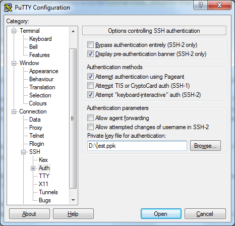
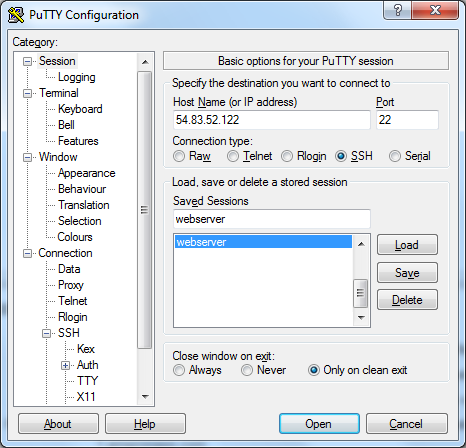
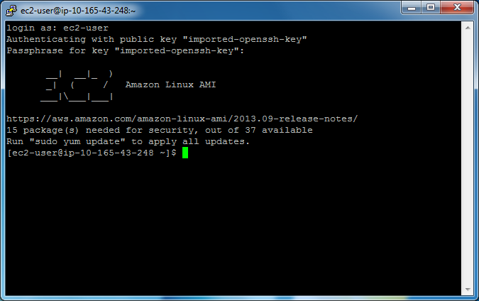

Подключение к инстансу EC2 через SSH
Теперь мы хотим подключиться к созданному нами виртуальному серверу. В этом руководстве мы будем использовать PuTTY - бесплатную реализацию Telnet и SSH для платформ Windows и Unix.
Скачайте архив PuTTY по этой ссылке. Затем распакуйте его в какой-нибудь каталог.
Вам нужно импортировать ключевую пару, которую вы скачали ранее в виде PEM-файла. Для этого запустите PUTTYGEN.EXE из дистрибутива PuTTY. Откроется окно PuTTY Key Generator ("Генератор ключей PuTTY"). В этом окне нажмите на кнопку Load ("Загрузить") и выберите свой PEM-файл, чтобы загрузить существующую ключевую пару. Затем введите какой-нибудь пароль для защиты вашего ключа (см. рисунок ниже). Запомните пароль, так как позже он вам понадобится.
 Рисунок Д.14. Импортирование ключа
Рисунок Д.14. Импортирование ключа
Наконец, нажмите кнопку Save private key ("Сохранить закрытый ключ"), чтобы сохранить ваш защищенный паролем ключ в виде PPK-файла.
Теперь все готово для подключения к инстансу EC2. Запустите PUTTY.EXE из дистрибутива PuTTY. Появится окно настроек PuTTY. В боковом меню этого окна выберите Connection->SSH->Auth ("Соединение->SSH->Аутентификация") и введите путь к своему PPK-файлу в поле Private key for connection ("Закрытый ключ для подключения"). Эти настройки показаны на рисунке ниже.
 Рисунок Д.15. Закрытый ключ
Затем выберите в боковом меню Window->Translation ("Окно->Перевод") и в выпадающем меню в поле кодировки выберите UTF-8 (см. рисунок ниже):
 Рисунок Д.16. Страница настроек Translation
Рисунок Д.16. Страница настроек Translation
Выберите категорию Session ("Сессия"). В поле Host name (or IP address) ("Имя хоста или IP-адрес") введите IP-адрес, который вы присвоили инстансу EC2. В поле Saved sessions ("Сохраненные сессии") введите 'webserver' и нажмите кнопку Save ("Сохранить"). Эта информация сохранится, и вам не придется вводить ее при каждом соединении.
 Рисунок Д.17. Страница настроек Session
Теперь дважды щелкните по webserver в списке сохраненных сессий. Откроется окно терминала.
Вам нужно ввести в качестве логина 'ec2-user' и нажать Enter. Затем введите пароль, который
вы использовали при создании PPK-файла и снова нажмите Enter. Если все в порядке, вы должны
будете увидеть командную строку как на рисунке ниже:
 Рисунок Д.18. Окно терминала
В этой консоли вы можете набирать команды и видеть результат их выполнения.